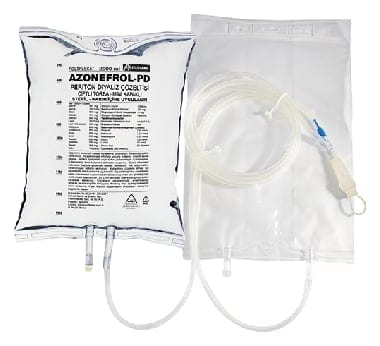

Azonefrol-Pd Periton Diyaliz Çözeltisi, 2500 ml Tekli Torba

Ne için kullanılır
KT · Bölüm 1• Periton diyalizi çözeltileri böbrekleri geçici olarak görevini yapamayan ya da iyileşmeyecek şekilde bozulmuş hastalarda kullanılır. Kandaki fazla suyu ve atık maddeleri çekerek alırlar; anormal olarak yükselmiş tuz düzeylerini ise normale döndürürler. • AZONEFROL-PD, 2000 ve 2500 mililitrelik (2 ve 2,5 litre) torbalarda kullanıma sunulmuş bir periton diyalizi (karından yapılan diyaliz) çözeltisidir. • AZONEFROL-PD şeker içermeyen bir periton diyalizi çözeltisidir. AZONEFROL-PD, beslenme bozukluğu olan böbrek yetmezlikli hastalar, eğer periton diyaliziyle (karın diyalizi) tedavi ediliyorsa, bu hastalarda beslenme desteği olarak kullanılır. AZONEFROL-PD içindeki amino asitler, beslenmesi bozulmuş hastalar için ek bir beslenme kaynağı sağlar.
Bu ilacı kullanmaya başlamadan önce bu KULLANMA TALİMATINI dikkatlice okuyunuz, çünkü sizin için önemli bilgiler içermektedir. • Bu kullanma talimatını saklayınız. Daha sonra tekrar okumaya ihtiyaç duyabilirsiniz. • Eğer ilave sorularınız olursa, lütfen doktorunuza veya eczacınıza danışınız. • Bu ilaç kişisel olarak sizin için reçetelendirilmiştir, başkalarına vermeyiniz. • Bu ilacın kullanımı sırasında, doktora veya hastaneye gittiğinizde doktorunuza bu ilacı kullandığınızı söyleyiniz. • Bu talimatta yazılanlara aynen uyunuz. İlaç hakkında size önerilen dozun dışında yüksek veya düşük doz kullanmayınız.